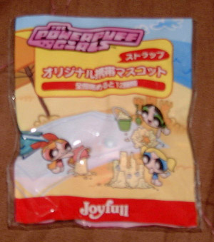
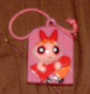
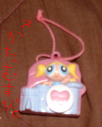
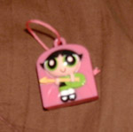
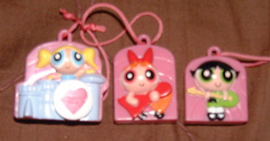

その3 パワパフストラップ
その話を聞いたのは大分前。とある大手カートゥーン系サイト様の掲示板を見ていた時の事でした。
「ジョイフルでパワパフのストラップがもらえるらしい」という情報が飛び交っているのをちらっと見たんです。
しかしどうすればもらえるのかというと…「お子様ランチのおまけ」。
私の年令を考えると…
無理です、ジョイフルさん。
というわけでこの件でも諦め切っておりました。いくらプライドの無い人間とは言え一応年頃の女子が
「御注文はお決まりでしょうか？」「お子様ランチ！！！」
などとは…言えません。どう考えても。
しかしまあジョイフルも酷い。
まあ子供が欲しい欲しい言うのを狙ったんでしょうがおっきいお友達の存在を無視しないでほしい。
ってなわけでこのページは以上！
…などというわけにもいきません。（汗
あ～もうどうしよう、ノリでこんなレポートつくっちゃったけど流石にお子様ランチは…お子様ランチは…！
と、そんな時。
母「あー、いいものもらってきてあげたわよー」
↓

私「うおおおぉあおぉあぃあいぃあぃあいぃあだぁぁ！！！！
ど…どうしたのこんな…こんなの！？」
母「あー仕事場で貰った」
平然と言う母親にただただ感謝感謝、しかも勿体無くて開けられないという。（キモイ）
数十分眺めたあと、震える腕でそろそろ開封。（世界一気持ち悪い）
パッケージはなかなか手が込んでていい感じだから中身もきっといいに違い無い！
そう信じて袋を開けたのですが

……………
ジョイフルのバカァーッ！！！！
っていうか何ですかコレ？ブロが持ってる赤いやつ。にんじん？
推測すると「愛が世界を動かすの～」の時のギター…？何この赤一色の物体。にんじん？
っていうか、なんか塗装がひどい。ぐっちゃぐちゃ。はみでたり塗れてなかったり。
そして極め付け、紐がただの固結び。どうよ？
こんなのつける勇者いるのかと。私は心底がっかりして袋を閉じ、今後一生このストラップみたいなものを見ないと誓ったのだが
数日後。
母「あー、いいものもらってきてあげたわよー」
↓

………………………………（もはや無言）
母の仕事場には、知人がジョイフルに勤めているという人がいるらしくいつもこういう物を貰ってくるのですが
「いらないからあげた感」がひしひしと伝わってきます…そうだよね、いらないよねこんな子供だまし。。。。
え～とちなみにこれは「愛が世界を動かすの～」のベースのバタカとドラムのバブたん。…バタカのギター、ブロと比べて遥かにまともだ。
でも結局固結び。。。夢破れたり。
まあ結局「おまけ」レベルだからしょうがないんだと思うけど、これを手にとった瞬間の純粋な子供達の顔を想像すると可哀想でならない
え～ちなみに種類は「海シリーズ」でサーフィンブロ、ビーチボールバブ、サングラスバタ
「元気シリーズ」で飛ぶブロ、バブ、バタ（バタ・ブロはしかめっつら）
「音楽シリーズ」で上記3つ。
「シークレットシリーズ」は…博士（確定）、あとは市長とモジョと思います。
全部あつめると4シリーズ12種類が勢ぞろい！だそうです。誰か。。。
で、まあ三人揃ったわけだ。↓

愛が世界を動かす…の？
→その4 カレンダーコーナーへ
[PR]動画